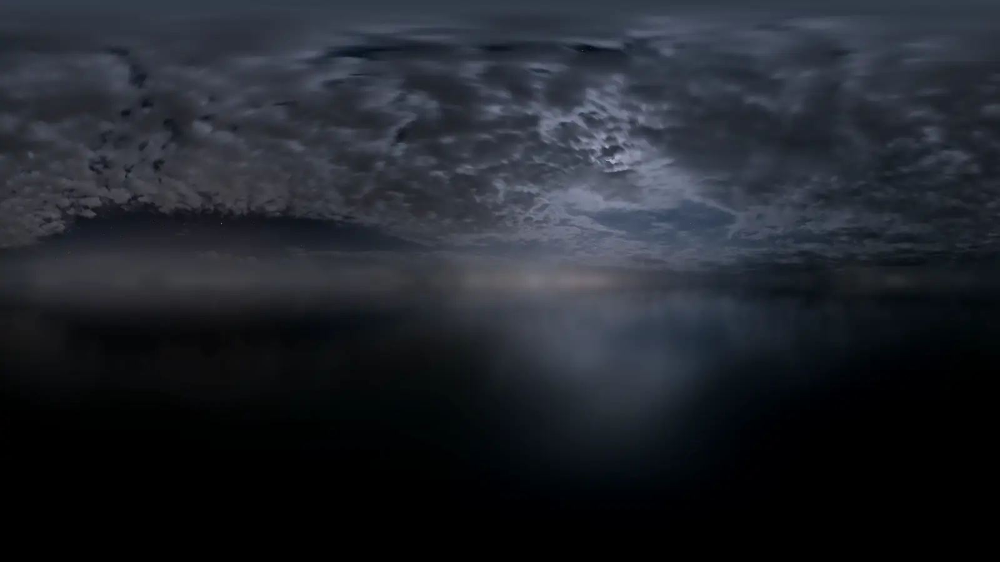
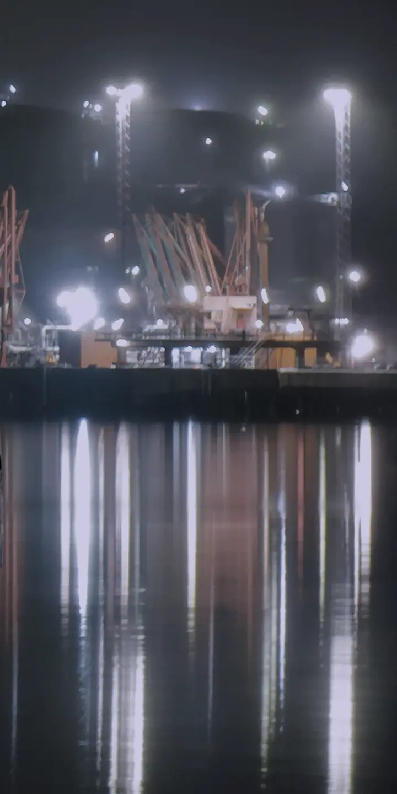
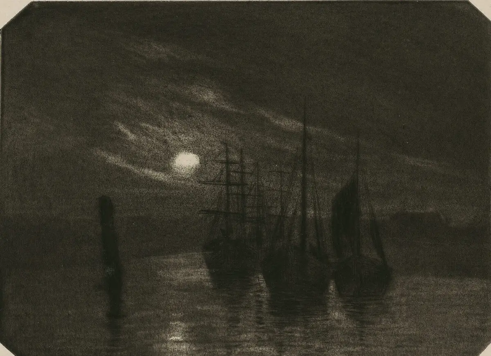

A
Manrope seul
Clair, mais trop uniforme
ENTRE PLUSIEURS VIES SEROLYN / PARIS / 2026
Hero desktop / proposition principale
1440 × 900

Code, sons et systèmes pour donner une forme à ce qui flotte.
01 / CONCEPT
Un espace numérique nocturne, intime et habitable — entre rêve, archive personnelle, morceau ambient et système informatique.
« Cela semble calme et sûr, mais on sent qu’un signal étrange existe sous la surface. »
Intention centrale
02 / COULEUR
Le violet crée la profondeur. Le rouge n’apparaît qu’en anomalie. Les textes utiles restent Mist ou Ash.
#07080DFond principal
#11121CPlans secondaires
#DDDDE5Texte principal
#8D8E9CTexte secondaire
#6964C7Lumière atmosphérique
#CF4B46Anomalie rare
#C99B70Chaleur résiduelle
rgba(221, 221, 229, 0.14)Repères fins
Mist / Void14,8:1AAA
Ash / Void6,2:1AA
Warmth / Void8,0:1AAA
Signal / Void4,0:1Décor / grand texte
03 / TYPOGRAPHIE
Comparaison réelle des rôles, puis combinaison recommandée. Toutes les fontes sont locales, en WOFF2 et sous SIL OFL 1.1.
ENTRE PLUSIEURS VIES SEROLYN / PARIS / 2026
ENTRE PLUSIEURS VIES ce qui flotte.
ENTRE PLUSIEURS VIES
ce qui flotte. SIGNAL / 01 / PARIS / 2026ENTRE PLUSIEURS VIES
SCÈNES SONORES
Je construis entre code, son et image.
Chaque morceau est un lieu émotionnel à habiter.
SEROLYN / PARIS / 2026 — INDEX 01
04 / RESPONSIVE
La version mobile conserve le même signal, sans empiler les effets ni miniaturiser la composition desktop.
Navigation réduite à la marque et à un index lisible.
Titre sur trois lignes, image derrière le texte avec contraste protégé.
Actions distinctes, cibles d’au moins 44 px.
Une seule anomalie rouge dans le premier écran.
SEROLYN / PARIS / 2026
ENTRE05 / SYSTÈME
Chaque bloc reçoit un geste visuel unique : grille, reflet ou archive. Les contours restent rares et les rayons presque nuls.
Un système interactif où projets, obstacles, ressources et objectifs deviennent forces, fronts et trajectoires.
PROJET INTERACTIF / REACT / 2026
SCÈNE / 01LECTURE MANUELLE — 03:42

Études, erreurs et expériences construites au fil de l’apprentissage.
06 / NAVIGATION
La navigation et le footer forment deux repères calmes. Aucun HUD, badge décoratif ou menu flottant permanent.
07 / MATIÈRE
Les images sont locales, recadrées, assombries et compressées. Le grain et l’anomalie rouge sont produits en CSS pour rester légers.
08 / MOUVEMENT FUTUR
Principes documentés pour la phase suivante. Aucun de ces mouvements n’est appliqué à l’application actuelle.
Lumière très lente, sur un seul plan atmosphérique.
Parallaxe minimale entre deux plans au maximum.
Opacité et translation courte, sans retarder la lecture.
Fondu, flou léger et profondeur entre les pages.
Influence presque imperceptible, sans déplacer les commandes.
Éclair rouge ponctuel, jamais présent dans chaque section.
Lecture toujours déclenchée explicitement par la personne.
Désactivation complète avec prefers-reduced-motion.
Animation permanente · scroll hijacking · glitch fréquent · texte tremblant · parallaxe excessive · curseur gênant · autoplay · lecture bloquée
09 / CRÉDITS
Provenance, téléchargements, licences, transformations et poids sont détaillés dans ASSET_MANIFEST.md.
Poly Haven · Wikimedia Commons · National Gallery of Art
Manrope Variable 400–700 · Newsreader Italic 400 · IBM Plex Mono 400
3 WebP + 3 WOFF2 · aucun CDN · aucune ressource distante